1Antes de empezar
Tu trabajo en el sistema es registrar qué placas salen del almacén para cada Instrucción de Fabricación (IF) y recoger las firmas. El sistema compara automáticamente lo que escaneas contra lo que pide NetSuite (eso se llama confronta).
Necesitas:
- Un celular con Chrome y conexión a internet.
- La pistola lectora de QR conectada al celular (es la forma recomendada). Si no hay pistola, se puede usar la cámara (ver sección 8).
- Tu correo y contraseña del WMS.
- Que estén presentes las personas que deben firmar: tú, el cliente (o quien recoge) y, si son muchas placas, el jefe de almacén y el gerente.
2Entrar al sistema
- Abre Chrome en el celular y entra a la dirección del WMS que te dio sistemas.
- Escribe tu Email y tu Contraseña.
- Toca Iniciar sesión.
Al entrar verás el Escáner. Abajo aparece el aviso “Se cargaron N IFs disponibles”: son las IFs de tu sucursal que están listas para surtir.
User is inactive: tu usuario está desactivado; avisa a tu jefe o a sistemas.
User has no assigned role: tu usuario no tiene rol; avisa a sistemas.
Demasiados intentos de inicio de sesión…: fallaste 10 veces; espera 15 minutos.
Completa la verificación de seguridad: marca la casilla de verificación que aparece arriba del botón.
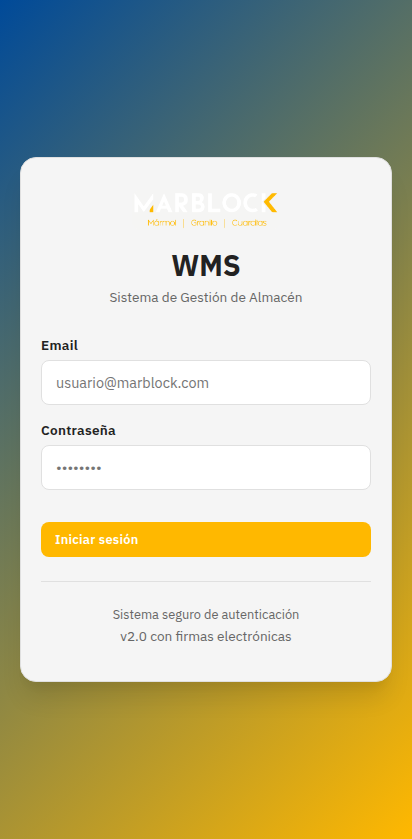
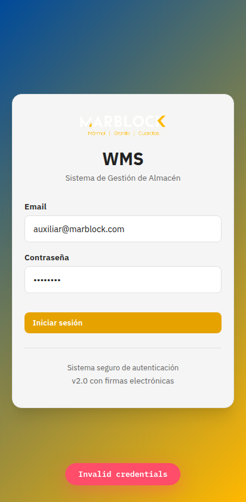
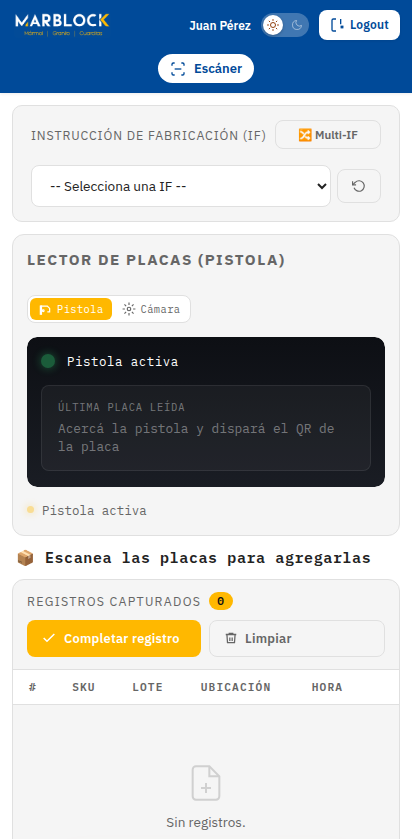
3La pantalla del Escáner
| Parte | Para qué sirve |
|---|---|
| Encabezado azul | Tu nombre, el botón de tema claro/oscuro y Logout (cerrar sesión). Cierra sesión al terminar tu turno. |
| Instrucción de Fabricación (IF) | La lista para elegir la IF que vas a surtir. El botón ⟳ vuelve a consultar las IFs en NetSuite. |
| 🔀 Multi-IF | Activa el modo para sacar varias IFs juntas con una sola ronda de firmas (sección 7). |
| Lector de placas | Elige Pistola (recomendado) o Cámara. El foco verde “Pistola activa” indica que el sistema está escuchando la pistola. |
| Última placa leída | Muestra en verde la última placa que entró bien (SKU · lote · ubicación) o en rojo si el código no sirvió. |
| Registros capturados | La lista de placas escaneadas, con un contador amarillo. Aquí están Completar registro (enviar) y Limpiar (borrar todo). |
4Salida de una sola IF (paso a paso)
4.1 Elegir la IF
- Toca la lista -- Selecciona una IF --.
- Elige la IF que te indicaron. Cada opción muestra la IF y su documento de origen, por ejemplo
IF20101 (SO15501). - Debajo aparece una etiqueta amarilla con la IF elegida. La ✕ de esa etiqueta quita la selección.
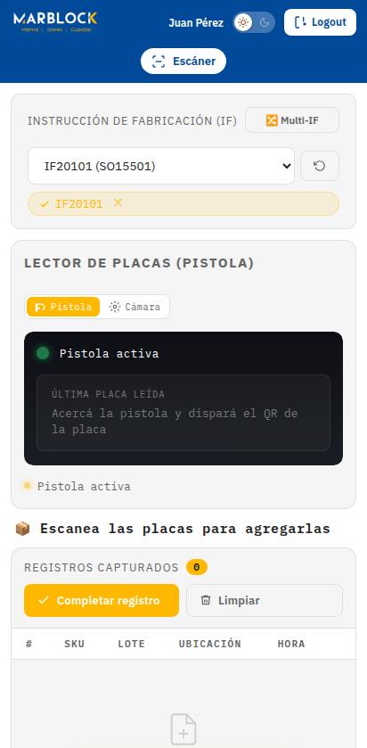
4.2 Escanear las placas
- Verifica que esté seleccionado Pistola y que el foco diga Pistola activa.
- Apunta la pistola al QR de la etiqueta de la placa y dispara. No necesitas tocar ningún campo antes.
- Escucharás/verás la confirmación: aviso verde abajo y la placa en Última placa leída.
- Repite con cada placa. El contador de Registros capturados sube con cada lectura.
El QR de cada placa trae tres datos separados por espacio: SKU LOTE UBICACIÓN, por ejemplo 030LTH 12572-3.16X1.96 GDL. El lote incluye las medidas de la placa (3.16 × 1.96 m).
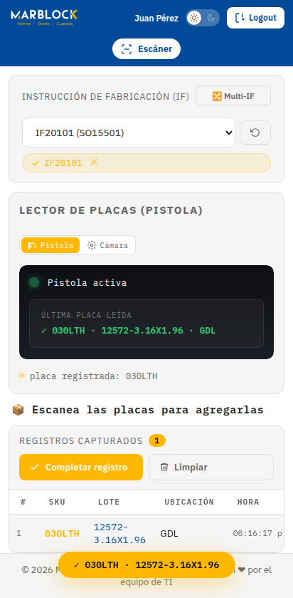
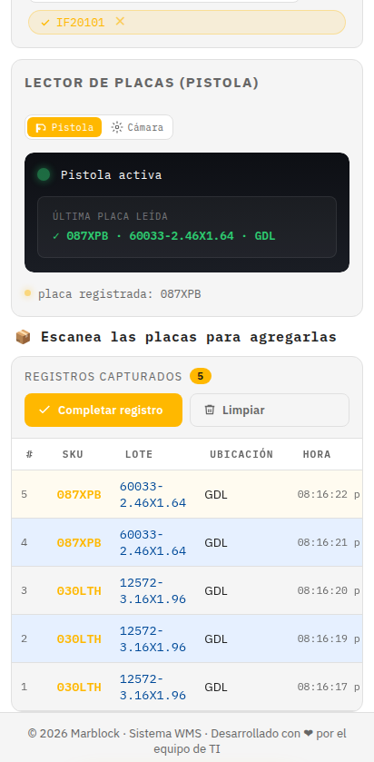
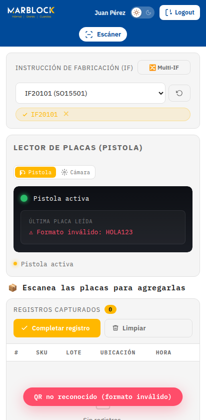
4.3 Corregir: borrar una placa
- Desliza la tabla hacia la izquierda hasta ver la columna con ✕.
- Toca la ✕ de la placa equivocada. Se quita de la lista.
El botón Limpiar borra todas las placas (pide confirmación). Úsalo solo si vas a empezar de cero.
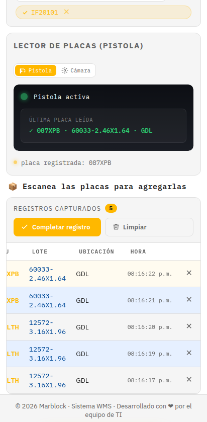
4.4 Completar el registro
- Cuando hayas escaneado todas las placas, toca Completar registro.
- El botón cambia a “Validando confronta…”: el sistema compara tus placas contra lo que pide la IF en NetSuite.
- Si todo coincide verás “✓ Confronta validada correctamente” y la ventana Confirmar salida de placas con el número de placas y la IF.
- Toca Confirmar para pasar a las firmas (o Cancelar para regresar y seguir escaneando).
Si la confronta encuentra diferencias, en lugar de esta ventana aparece Diferencias en Confronta: ve a la sección 6.
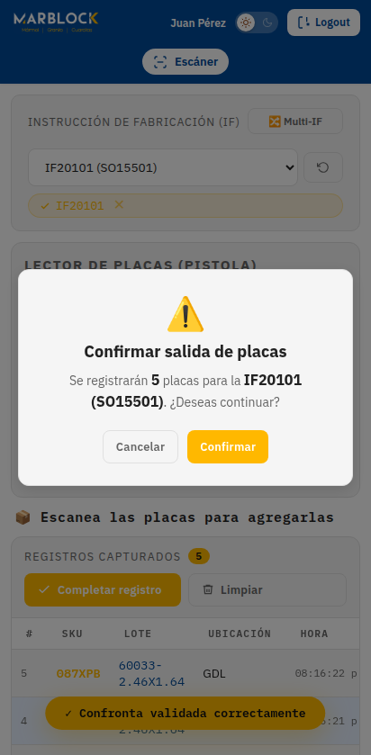
5Firmas
Las firmas se piden una tras otra en la misma ventana. Cuántas se piden depende del número de placas de la salida:
| Placas en la salida | Firmas que se piden (en este orden) |
|---|---|
| 1 a 3 | 👤 Auxiliar de Almacén → 🏢 Cliente |
| 4 a 10 | 👤 Auxiliar → 🏢 Cliente → 👔 Jefe de Almacén |
| 11 o más | 👤 Auxiliar → 🏢 Cliente → 👔 Jefe de Almacén → 📊 Gerente |
Estas firmas son de las personas presentes en la salida; no importa quién inició sesión en el celular.
- Lee el título de la ventana: dice de quién es la firma (ej. “Firma de Auxiliar de Almacén”).
- Entrega el celular a esa persona para que firme con el dedo dentro del recuadro blanco.
- Si se equivoca, toca Limpiar y vuelve a firmar.
- Toca Confirmar firma. La ventana pasa sola a la siguiente firma.
- Al confirmar la última firma, el sistema envía todo automáticamente.
Cancelar en la ventana de firma detiene todo (“Captura de firmas cancelada”). Tus placas no se pierden: vuelve a tocar Completar registro cuando estén las personas para firmar; se piden todas las firmas de nuevo.
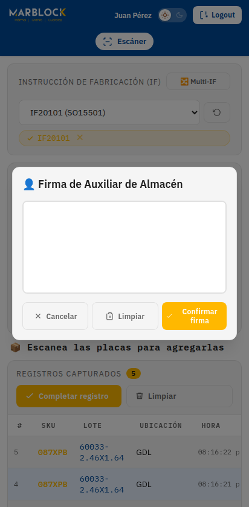
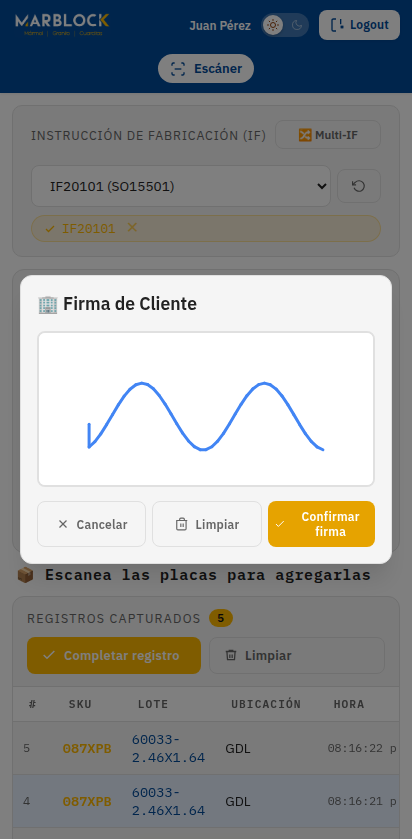
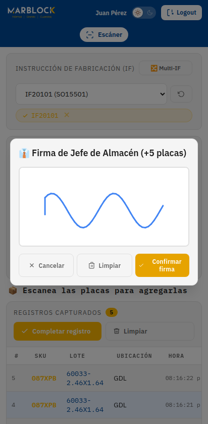
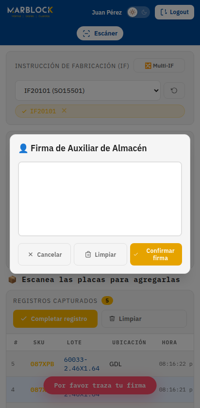
5.1 Envío terminado
Al terminar verás “✓ Se guardaron N registros en NetSuite” y después “✓ Enviado al sistema (N items)”. La tabla queda vacía, la IF se desmarca y en NetSuite la IF queda como enviada con las firmas adjuntas.
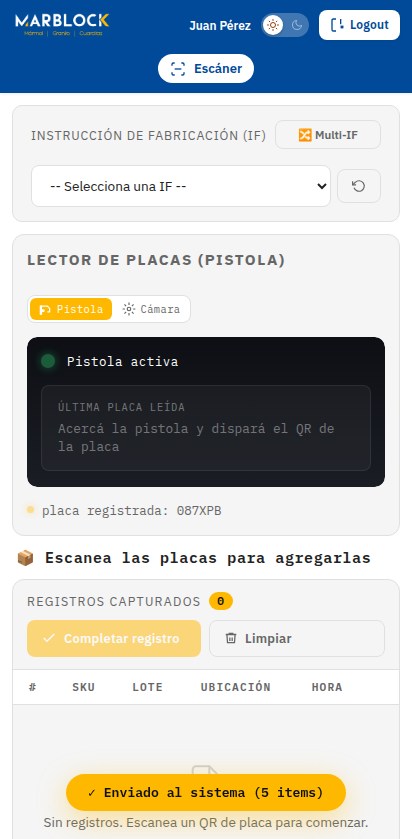
6Cuando la confronta encuentra diferencias
Si lo escaneado no coincide con la IF, aparece la ventana ⚠️ Diferencias en Confronta con una tarjeta roja por cada problema (lote, SKU y qué pasa).
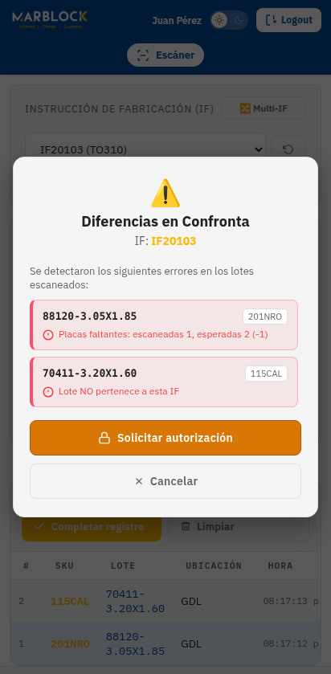
6.1 Qué significa cada mensaje
| Mensaje en la tarjeta | Qué significa | Qué hacer normalmente |
|---|---|---|
| Placas faltantes: escaneadas X, esperadas Y (-N) | De ese lote la IF pide más placas de las que escaneaste. | Busca la(s) placa(s) que faltan en rack/andén y escanéalas. Si de verdad no hay, pide autorización. |
| Placas sobrantes: escaneadas X, esperadas Y (+N) | Escaneaste más placas de ese lote de las que pide la IF. | Retira la placa extra de la tarima y bórrala con ✕ (o revisa si la escaneaste dos veces). |
| Lote NO pertenece a esta IF | Ese SKU/lote no está en la IF (placa “huérfana”). Si es el mismo SKU con otro lote, es un lote cruzado. | Revisa la etiqueta: probablemente tomaste otra placa. Retírala y borra la lectura; escanea la placa correcta. |
| Línea requerida sin escanear (esperadas: N) | Hay un artículo de la IF del que no escaneaste ninguna placa. | Surte y escanea esa línea completa. |
| Otro texto (ej. ubicación, media placa) | Placa escaneada en una ubicación distinta a la esperada, o la IF pide media placa y se escaneó completa. | Consulta a tu jefe antes de continuar. |
6.2 Opción A: Cancelar y corregir (lo recomendado)
- Toca Cancelar.
- Las placas con problema quedan marcadas en rojo en la tabla.
- Corrige: retira/borra las equivocadas y escanea las que faltan.
- Vuelve a tocar Completar registro.
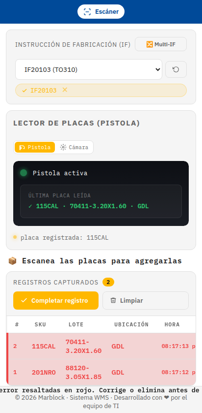
6.3 Opción B: Solicitar autorización con PIN
Si la diferencia es correcta (por ejemplo, el cliente acepta menos placas), el Jefe de Almacén de tu sucursal (o un Líder) puede autorizar la salida tal como está:
- Toca Solicitar autorización.
- Entrega el celular al jefe para que escriba su PIN (4 a 6 números). Tú no debes conocerlo.
- El jefe toca Autorizar y continuar.
- Si el PIN es correcto verás “✓ IF… autorizado por (nombre)” y continúa la confirmación y las firmas como en la sección 5.
Volver regresa a los botones Solicitar autorización / Cancelar sin autorizar.
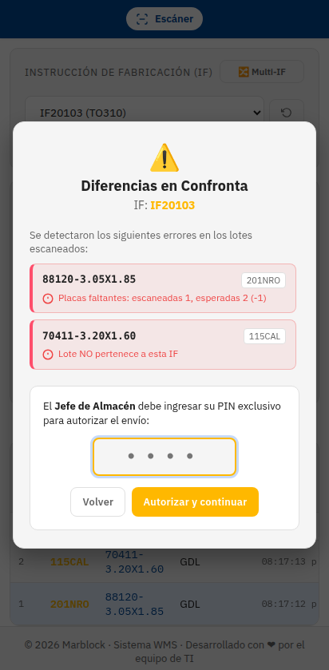
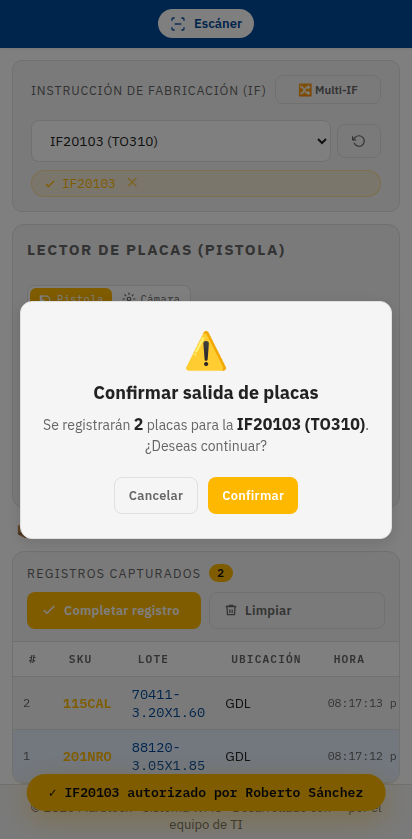
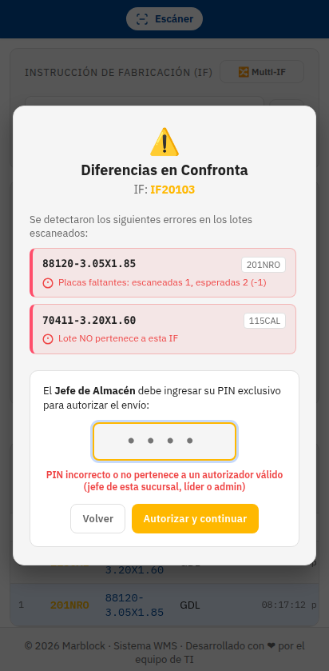
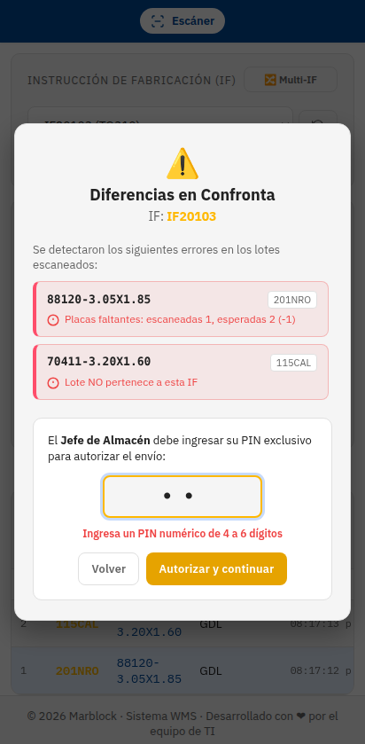
7Modo Multi-IF (varias IFs con una sola firma)
Úsalo cuando un mismo cliente o camión se lleva varias IFs. En lugar de hacer una salida (y una ronda de firmas) por cada IF, escaneas todas las placas juntas y el sistema decide a qué IF va cada una. Al final se firma una sola vez para todo el grupo.
7.1 Activar el modo y elegir las IFs
- Con la tabla vacía, toca 🔀 Multi-IF (queda resaltado en amarillo). La lista de IFs cambia a casillas.
- Marca las IFs que forman el grupo. El orden en que las marcas importa: cuando una placa sirve para varias IFs, se llena primero la que marcaste primero.
- Puedes agregar o quitar IFs del grupo en cualquier momento antes de completar.
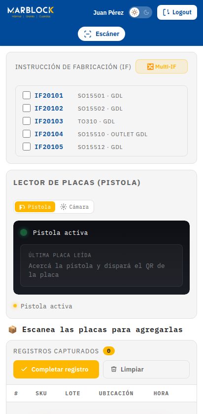
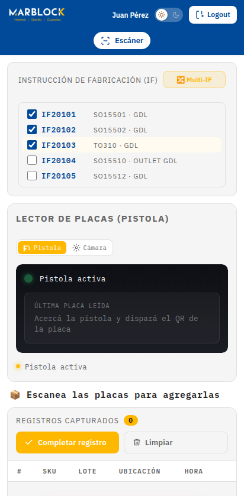
7.2 Escanear libremente
Escanea las placas en cualquier orden. Cada placa se asigna sola a una IF del grupo con estas reglas:
- Se busca qué IFs piden ese SKU + lote. Si solo una lo pide, va a esa.
- Si varias lo piden, se desempata por la ubicación del QR (la que coincide exactamente gana).
- Si sigue empatado, va a la primera IF (en orden de selección) a la que todavía le falten placas de ese lote.
- Si ninguna IF la pide, o todas ya están completas, queda en ⚠️ Pendientes de asignar.
Una placa ya asignada no se mueve sola después; solo cambia si tú la mueves.
La tabla se agrupa por IF. Cada grupo muestra:
- 📦 la IF, su ubicación y el total escaneadas/esperadas (ej. 3/5 placas).
- Un chip por línea con SKU/lote escaneadas/esperadas: 030LTH/12572… 3/3 en verde = línea completa; en ámbar = faltan placas; 030LTH/12572… 4/3 en rojo = sobran placas (revisa y mueve o borra la de más).
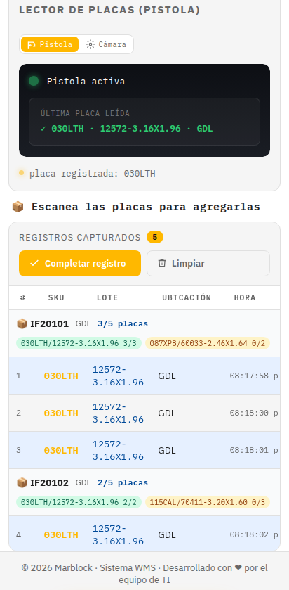
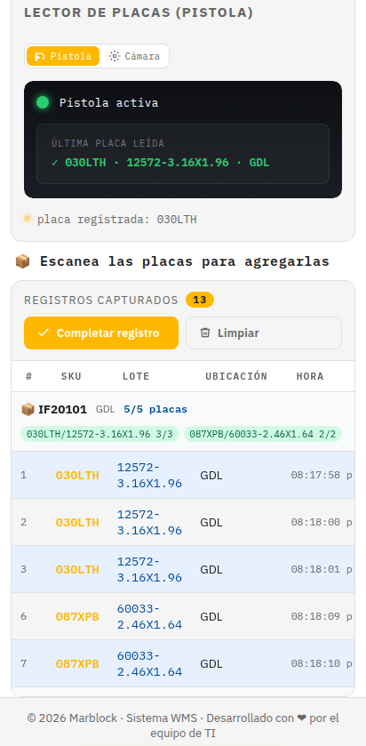
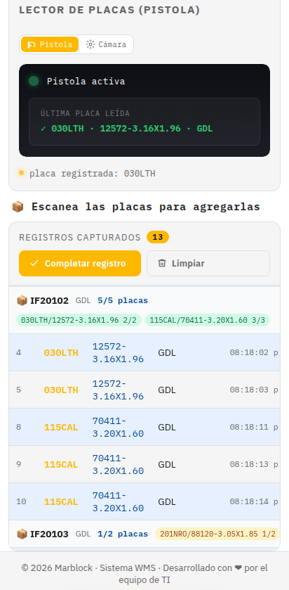
7.3 Pendientes de asignar
Al final de la tabla está el grupo ⚠️ Pendientes de asignar. Ahí caen:
- Placas cuyo SKU/lote no está en ninguna IF del grupo (huérfanas).
- Placas de más (todas las IFs que piden ese lote ya están completas).
- Placas de una IF que quitaste del grupo.
Para resolver cada pendiente desliza la tabla a la izquierda y:
- Moverla a una IF: en el selector de la fila elige la IF correcta. (También sirve para corregir una placa mal asignada; elegir Pendiente la regresa a pendientes.)
- Borrarla con ✕ si no debe salir (y regresa la placa física a su lugar).
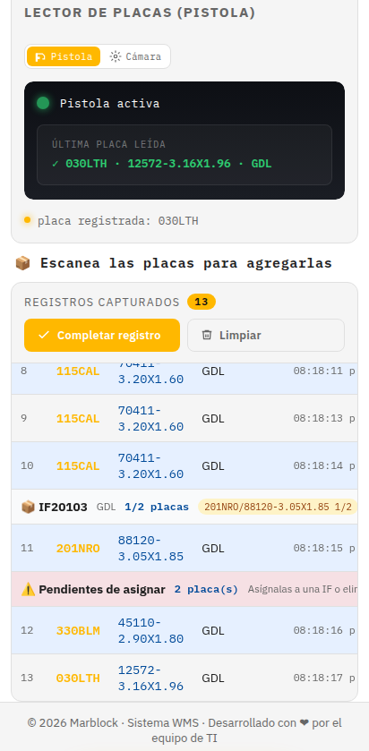
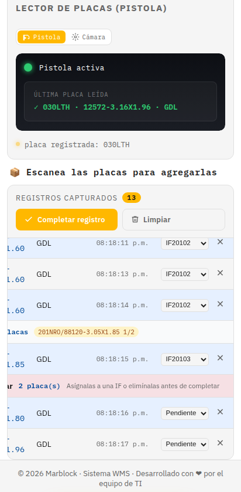
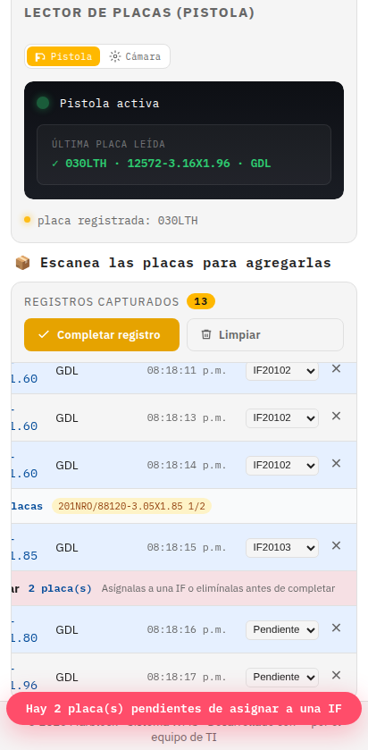
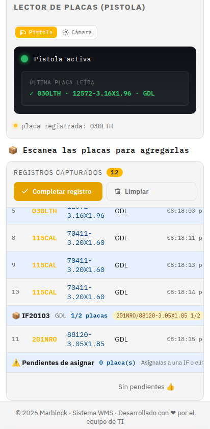
7.4 Completar el grupo: confronta IF por IF
- Toca Completar registro. El botón muestra “Validando confronta (3 IFs)…”.
- El sistema revisa cada IF por separado. Las que coinciden pasan solas.
- Si alguna IF tiene diferencias, aparece su ventana de Diferencias en Confronta indicando cuál es: “IF20101 (IF 1 de 2)”.
- Para cada IF con diferencias: Cancelar (se marcan en rojo solo las placas de esa IF para corregir) o Solicitar autorización con el PIN del jefe. El PIN autoriza solo esa IF; luego aparece la siguiente de la lista.
- Cuando todas estén validadas o autorizadas, aparece la confirmación del grupo: “Se registrarán 12 placas para la grupo: IF20101, IF20102, IF20103 (3 IFs)”.
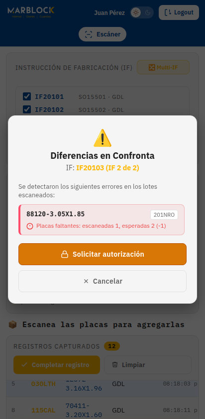
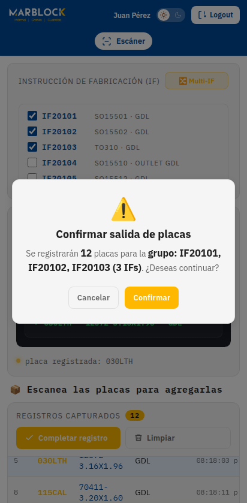
7.5 Una sola ronda de firmas
Las firmas se piden una sola vez para todo el grupo, y la cantidad de firmas se calcula con el total de placas del grupo (no por IF). En el ejemplo son 12 placas, así que se piden 4 firmas: auxiliar, cliente, jefe y gerente. Esas mismas firmas se adjuntan a cada IF del grupo en NetSuite.
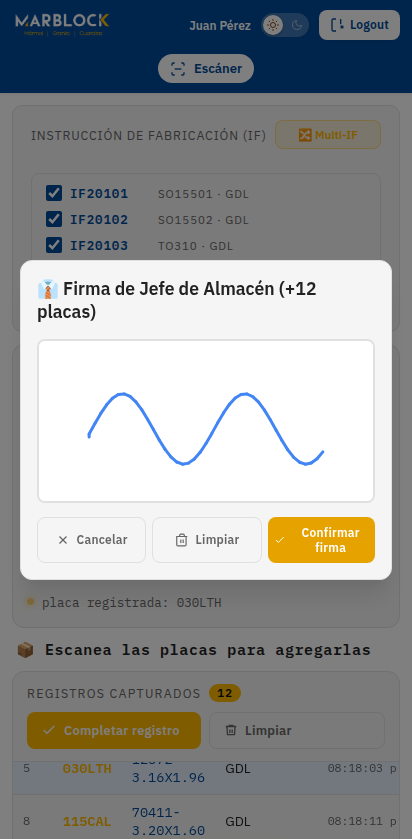
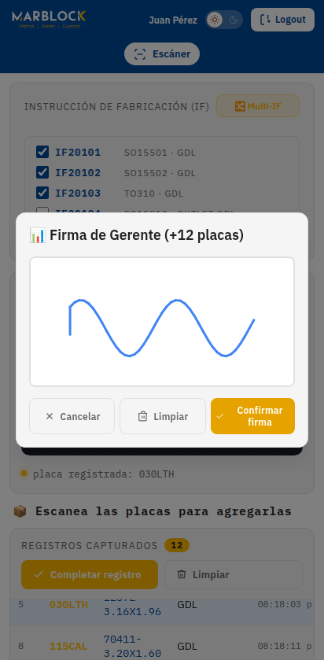
7.6 Resultado del envío y reintento
El grupo se envía IF por IF. Si todas salen bien verás “✓ Grupo enviado: N IF(s) en NetSuite” y todo se limpia.
Si alguna falla (por ejemplo, NetSuite no respondió), aparece el 📤 Resumen de envío:
- ✅ las IFs enviadas (sus placas ya salieron de la tabla);
- ❌ las que fallaron, con el motivo y el botón Reintentar.
- Toca Reintentar en la IF fallida. Se reenvía solo esa IF con las mismas firmas; no hay que volver a firmar.
- Si funciona verás “✓ IF… enviada”. Cuando ya no quedan fallidas, la pantalla se limpia sola.
- Si cierras el resumen, las placas de la IF fallida siguen en la tabla. No las borres: avisa a tu jefe.
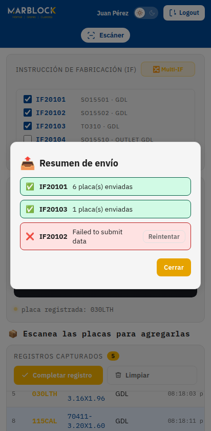
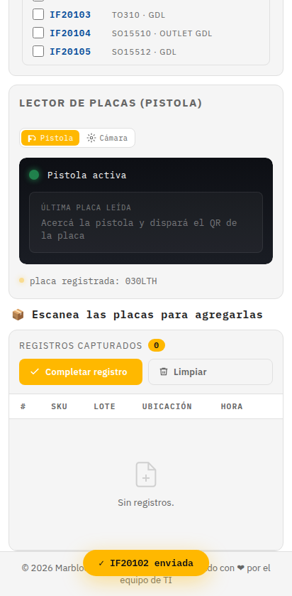
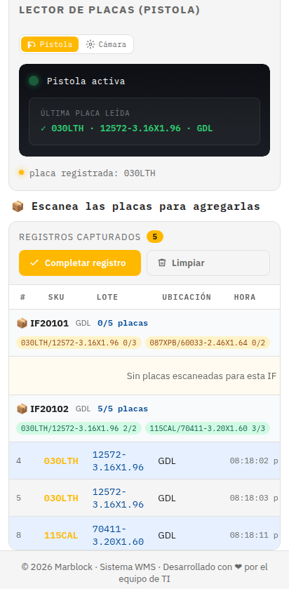
8Usar la cámara en lugar de la pistola
Solo si la pistola no funciona:
- Toca Cámara en el lector de placas.
- Acepta el permiso de cámara que pide Chrome.
- Apunta la cámara trasera al QR de la placa hasta que se lea.
- Al terminar, regresa a Pistola.
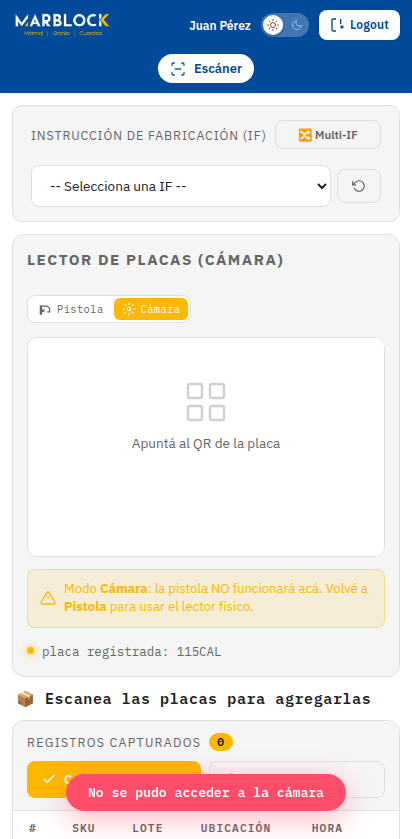
9Mensajes y errores: qué significan y qué hacer
| Mensaje | Significa | Qué hacer |
|---|---|---|
| Se cargaron N IFs disponibles | Todo bien: lista de IFs actualizada. | Nada. |
| Error al cargar IFs… | No se pudo consultar NetSuite. | Revisa internet y toca ⟳. Si persiste, avisa a sistemas. |
| QR no reconocido (formato inválido) | El código no es de placa o está incompleto. | Reescanea; si falla, reimprimir etiqueta. |
| Escanea al menos una placa antes de completar el registro | Tabla vacía. | Escanea las placas. |
| Selecciona una IF antes de completar el registro | No elegiste IF (modo normal). | Elige la IF en la lista. |
| Selecciona al menos una IF del grupo | Multi-IF sin IFs marcadas. | Marca las IFs del grupo. |
| Hay N placa(s) pendientes de asignar a una IF | Multi-IF con placas sin IF. | Muévelas a una IF o bórralas (7.3). |
| Error cargando líneas esperadas… | No se pudo leer qué pide cada IF del grupo. | Desmarca y vuelve a marcar la IF; revisa internet. |
| Placas con error resaltadas en rojo… | Cancelaste la ventana de diferencias. | Corrige y vuelve a completar. |
| ⚠️ No se encontraron líneas esperadas para la IF… en NetSuite | La IF no existe, se canceló o cambió en NetSuite. | No continúes. Avisa a tu jefe. |
| Error de conexión al validar confronta… | Se perdió internet a medio proceso. | Revisa la señal y toca Completar registro otra vez. Tus placas siguen en la tabla. |
| Ingresa un PIN numérico de 4 a 6 dígitos | PIN muy corto o largo. | Que el jefe lo escriba completo. |
| PIN incorrecto o no pertenece a un autorizador válido… | PIN mal escrito o de alguien sin permiso en tu sucursal. | Que el jefe de tu sucursal o un líder lo intente de nuevo. |
| Error de conexión al validar PIN | Sin internet. | Reintenta con señal. |
| Por favor traza tu firma | Firma vacía. | Firmar en el recuadro. |
| Captura de firmas cancelada | Se tocó Cancelar en las firmas. | Completar registro de nuevo cuando estén los firmantes. |
| Error al enviar: … | NetSuite no recibió la salida (una IF). | Las placas siguen en la tabla. Reintenta con Completar registro; si vuelve a fallar, avisa a sistemas. |
| N IF(s) enviadas · M fallaron | Multi-IF: envío parcial. | Usa Reintentar en el resumen (7.6). |
| Error al enviar — descargando local | El respaldo no llegó; el celular descargó un archivo .json. | No borres el archivo; avisa a sistemas. |
| Ya fue enviado. Limpia la tabla para nuevos registros. | Intento de reenviar lo mismo. | Escanea la siguiente salida. |
| Sesión expirada. Por favor inicia sesión nuevamente. | La sesión dura 24 horas. | Vuelve a entrar. |
10Glosario
- IF (Instrucción de Fabricación / Item Fulfillment)
- La orden de NetSuite que dice qué placas deben salir. Ej.
IF20101. - SO / TO
- Documento de origen de la IF: orden de venta (SO) u orden de transferencia (TO).
- SKU
- Código del material (ej.
030LTH). - Lote
- Número de lote con las medidas de la placa en metros (ej.
12572-3.16X1.96= 3.16 × 1.96 m). - Ubicación
- Almacén donde está la placa (GDL, MEX, MTY, OUTLET GDL, TEMPORAL…).
- Confronta
- Comparación automática entre lo escaneado y lo que pide la IF.
- Placa huérfana
- Placa escaneada que no pertenece a la IF.
- Lote cruzado
- Se entregó el mismo material (mismo SKU) pero de otro lote.
- Media placa
- La IF pide una fracción de placa y se escaneó una placa completa (falta re-etiquetar).
- PIN
- Clave numérica personal del jefe/líder para autorizar diferencias.
- Multi-IF
- Modo para sacar varias IFs juntas con una sola ronda de firmas.
- Pendientes de asignar
- Placas del modo Multi-IF que todavía no tienen IF.